Introduction
OpenGL is a cross-platform graphics API that is widely used for rendering 2D and 3D graphics. It was first introduced in 1992 and was quickly adopted as the standard rendering interface. In this project, KAT Systems built a playground using OpenGL and GLUT, a wrapper for OpenGL which can be used to easily create primitives.
Camera Setup
Various camera based operations are defined in the camera.h file. We used the GLM package to optimize vector and matrix operations. The camera is first setup by specifying its position, the point it is looking at and the up vector required to define the view coordinate system. Various other properties like aspect ratio, near distance and far distance are also specified. The position is specified using the setupPosition function and other properties are set using the setProperties function. After finishing the setup, various operations can be performed using the camera. In our model, you can use the keyboard to move the camera around using the move function. The pitch, yaw and roll functions allow you to rotate the camera about the various axes. Finally, the setModelViewMatrix function is used by the various functions to update the view coordinate system.
Making the Props using OpenGL
The mid-point circle-drawing algorithm has also been implemented. Similar to the line-drawing algorithm, it checks the position of the mid-point of two choices with respect to the ideal circle to make a decision. The algorithm is based purely on integer arithmetic and is incremental in nature. Unlike the line-drawing algorithm, the increments are based on second order differentials since the equation of a circle is quadratic in nature.
The standard algorithm draws circles with their centers at the origin. To overcome, this limitation, a simple shift in the origin before drawing the circle is employed. The origin is shifted back to its original location after drawing to restore the state of the canvas. The method exploits the 8-way symmetry of a circle. Instead of drawing the entire circle in the algorithm body itself, only 1/8 of it is drawn. The rest of the circle is completed by reflecting the arc along the axes, origin and y = x and y = -x to get the complete figure. This reflection can be done point-by-point using the following method:
Name: drawCirclePoint
Input The point to be drawn
Step 1: Draw all the reflected points
Draw the following points with color c:
<-x, y>
<-x, -y>
<-y, x>
<-y,-x>
Step 2: End
The main algorithm body is as follows:
Name: drawCircle
Input: The center of the circle
Step 1: Shift the origin:-
Shift the origin to
Step 2: Initialize variables:-
Set d to 1 – r.
Set dE to 3.
Set dSE to -2*r + 5
Set X = 0
Set Y = r
Step 3: Draw the first point:-
Call drawCirclePoint(0, r, c).
Step 4: Draw the rest of the points:-
While Y > X do:
If d < 0 increment d by dE and increment dSE by 2.
If d >= 0 increment d by dSE, increment dSE by 4 and decrement Y by 1.
Increment dE by 2 and X by 1.
Call drawCirclePoint(X, Y, c)
Step 5: Restore the origin:-
Set the origin to <-x1, -y1>
Step 6: End
Are the Powerpuff Girls good for Townsville?
The artists at KAT Studios have created two modern masters. The first is titled La Blossoms de Naturale :
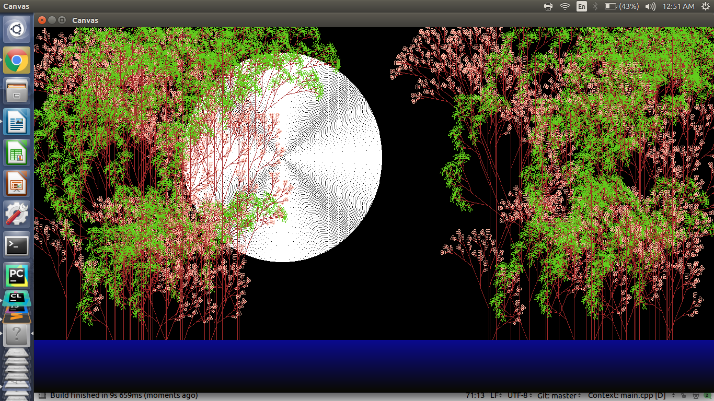
The second is titled Patcher in the Rye :
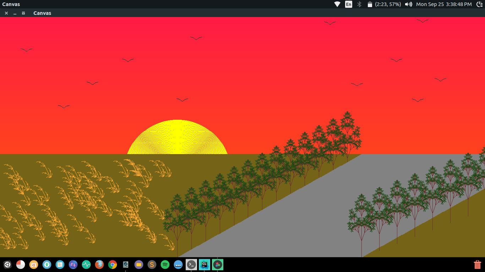
We experimented with our vision of evolution, we call it Smithsonian Evolution :
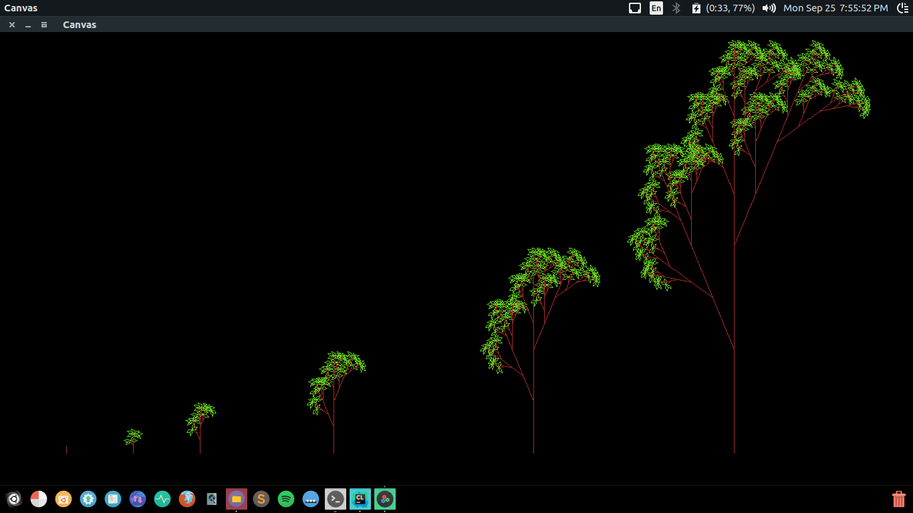
We now analyze the beauty of our art in numbers, although beauty is in the eye of the beholder. The figures with blue lines analyse the time taken to draw shrubs and the figures with red lines analyse the time taken to draw trees.
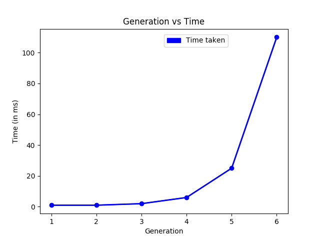
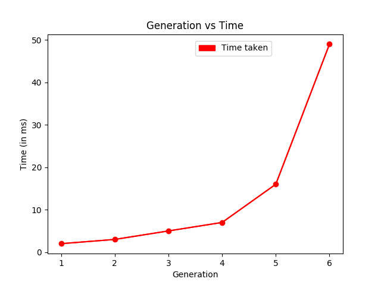
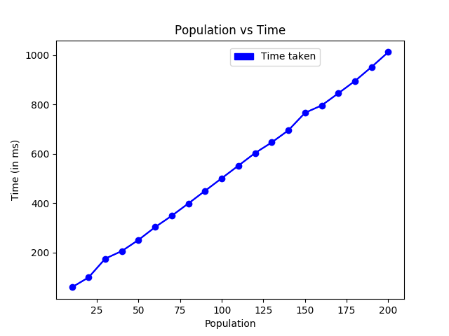
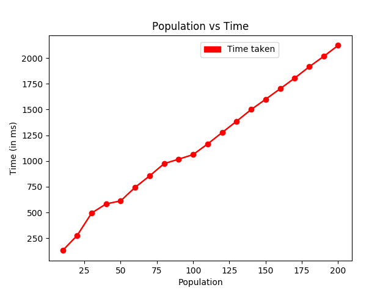
To hone our artistic skills, we experimented with many other grammars.
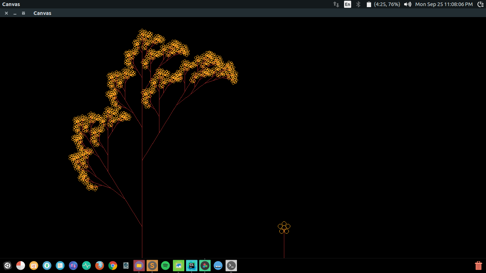
 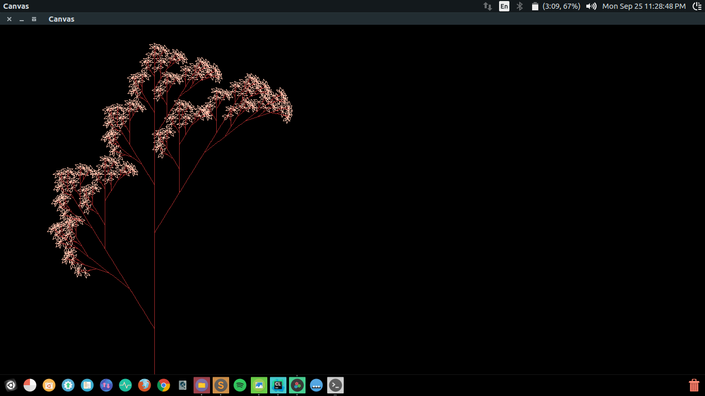
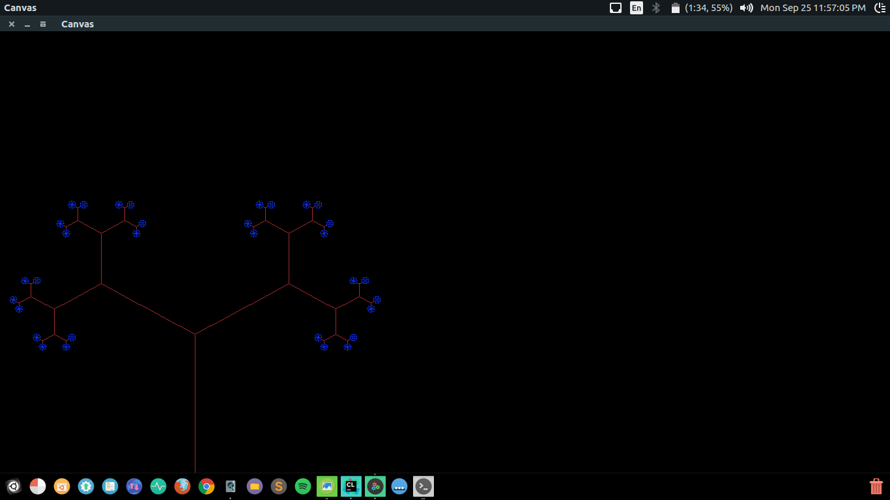
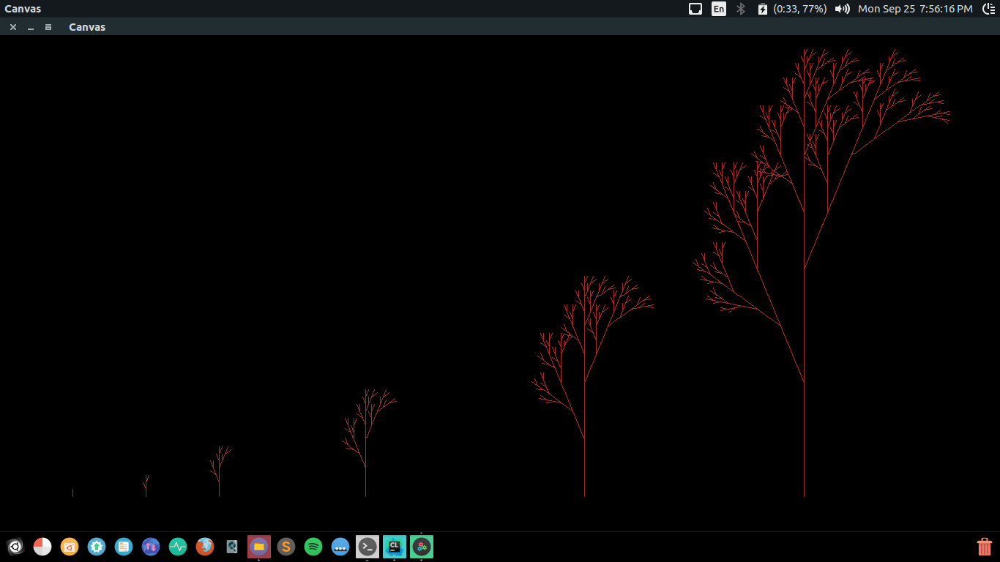
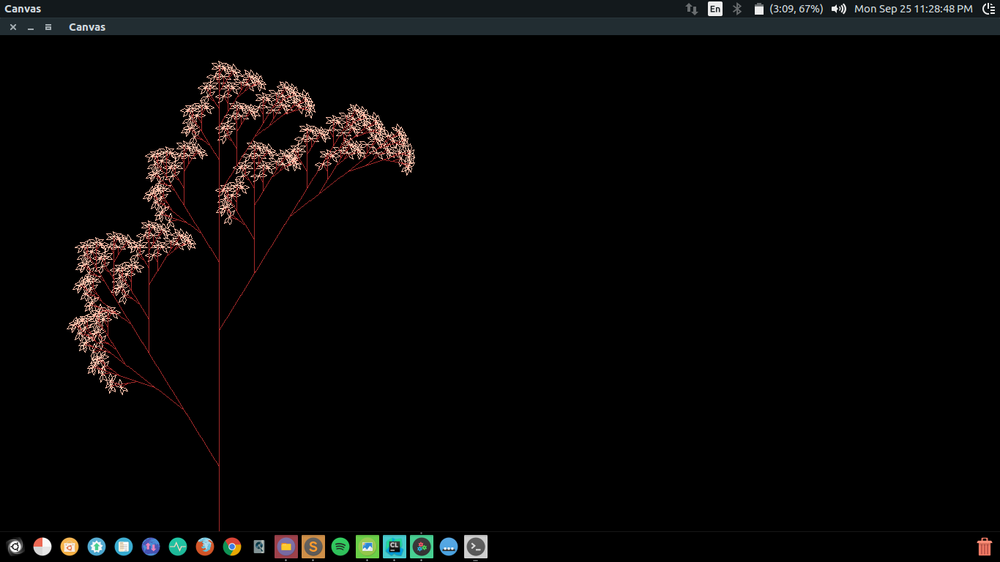
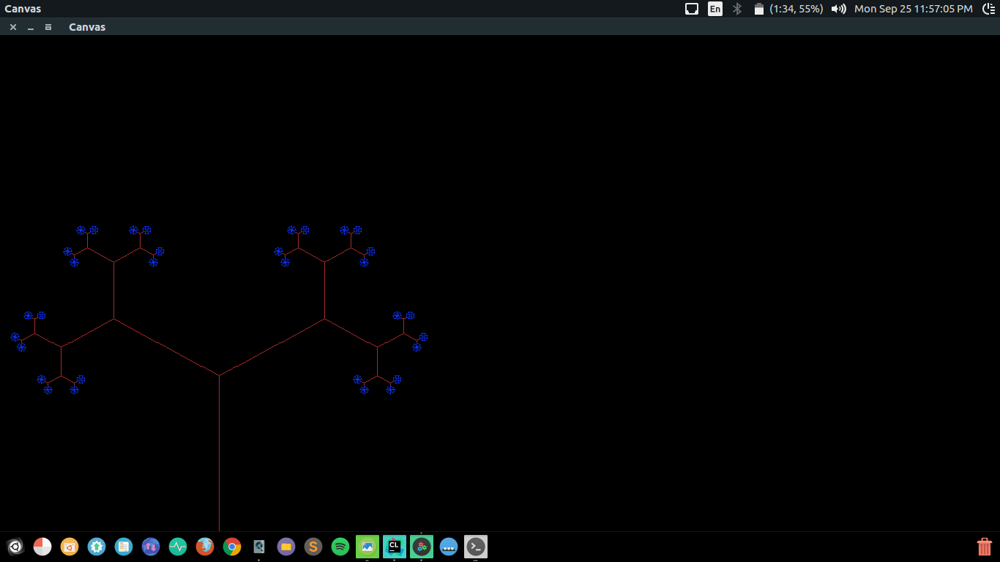
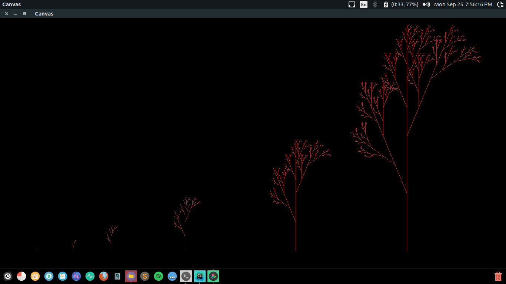
Speedbreakers Which Didn't Stop a Bugatti
The unfamiliarity with OpenGL caused major issues while implementing the Canvas class. This was partially circumvented by segregating the drawing part (handled by the Canvas) and the displaying part (handled by OpenGL) as much as possible. Only the display function of the Canvas class interacts with OpenGL, where it uses OpenGL to display the points which the Canvas stores in an unordered map. In essence, the Canvas itself serves as a frame buffer. Apart from this, since OpenGL itself does not handle creation of windows, a helper library called GLUT had to be used for this purpose.
Secondly, since OpenGL and GLUT are C libraries, integrating them with the more advanced C++ caused a slight problem: The GLUT function glutDisplayFunc takes as a parameter a pointer to a function with no arguments which draws the points using the OpenGL API. OOP design patterns dictate that such a function should be a part of the Canvas class. However, since functions of a class cannot be passed into C functions, a work-around had to be implemented. The map, which should actually be a private variable of the class, had to be made public and a separate non-class function draw had to be written which uses a global pointer to a Canvas object to draw the points using the OpenGL API. The Canvas display function simply makes the global pointer to point to the current object.
Another major issue we faced was because of the environment we were using to build the project. The CMake builder didn’t allow us to use the in-built string class of C++. Hence, we had to resort to using C strings and had to rewrite major portions of the code to reflect these changes.